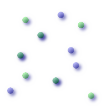
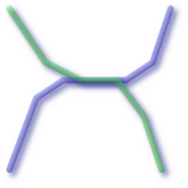
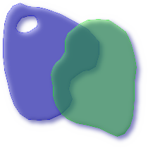

Name
ST_Overlaps — Returns TRUE if the Geometries share space, are of the same dimension, but are not completely contained by each other.
Synopsis
boolean ST_Overlaps(geometry A, geometry B);
Description
Returns TRUE if the Geometries "spatially overlap". By that we mean they intersect, but one does not completely contain another.
Performed by the GEOS module
![[Note]](images/note.png) | |
Do not call with a GeometryCollection as an argument |
This function call will automatically include a bounding box comparison that will make use of any indexes that are available on the geometries. To avoid index use, use the function _ST_Overlaps.
NOTE: this is the "allowable" version that returns a boolean, not an integer.
 This method implements the OpenGIS Simple Features
Implementation Specification for SQL 1.1. s2.1.1.2 // s2.1.13.3
This method implements the OpenGIS Simple Features
Implementation Specification for SQL 1.1. s2.1.1.2 // s2.1.13.3
This method implements the SQL/MM specification. SQL-MM 3: 5.1.32
Examples
The following illustrations all return TRUE.

| 
| 
|
--a point on a line is contained by the line and is of a lower dimension, and therefore does not overlap the line
nor crosses
SELECT ST_Overlaps(a,b) As a_overlap_b,
ST_Crosses(a,b) As a_crosses_b,
ST_Intersects(a, b) As a_intersects_b, ST_Contains(b,a) As b_contains_a
FROM (SELECT ST_GeomFromText('POINT(1 0.5)') As a, ST_GeomFromText('LINESTRING(1 0, 1 1, 3 5)') As b)
As foo
a_overlap_b | a_crosses_b | a_intersects_b | b_contains_a
------------+-------------+----------------+--------------
f | f | t | t
--a line that is partly contained by circle, but not fully is defined as intersecting and crossing,
-- but since of different dimension it does not overlap
SELECT ST_Overlaps(a,b) As a_overlap_b, ST_Crosses(a,b) As a_crosses_b,
ST_Intersects(a, b) As a_intersects_b,
ST_Contains(a,b) As a_contains_b
FROM (SELECT ST_Buffer(ST_GeomFromText('POINT(1 0.5)'), 3) As a, ST_GeomFromText('LINESTRING(1 0, 1 1, 3 5)') As b)
As foo;
a_overlap_b | a_crosses_b | a_intersects_b | a_contains_b
-------------+-------------+----------------+--------------
f | t | t | f
-- a 2-dimensional bent hot dog (aka buffered line string) that intersects a circle,
-- but is not fully contained by the circle is defined as overlapping since they are of the same dimension,
-- but it does not cross, because the intersection of the 2 is of the same dimension
-- as the maximum dimension of the 2
SELECT ST_Overlaps(a,b) As a_overlap_b, ST_Crosses(a,b) As a_crosses_b, ST_Intersects(a, b) As a_intersects_b,
ST_Contains(b,a) As b_contains_a,
ST_Dimension(a) As dim_a, ST_Dimension(b) as dim_b, ST_Dimension(ST_Intersection(a,b)) As dima_intersection_b
FROM (SELECT ST_Buffer(ST_GeomFromText('POINT(1 0.5)'), 3) As a,
ST_Buffer(ST_GeomFromText('LINESTRING(1 0, 1 1, 3 5)'),0.5) As b)
As foo;
a_overlap_b | a_crosses_b | a_intersects_b | b_contains_a | dim_a | dim_b | dima_intersection_b
-------------+-------------+----------------+--------------+-------+-------+---------------------
t | f | t | f | 2 | 2 | 2